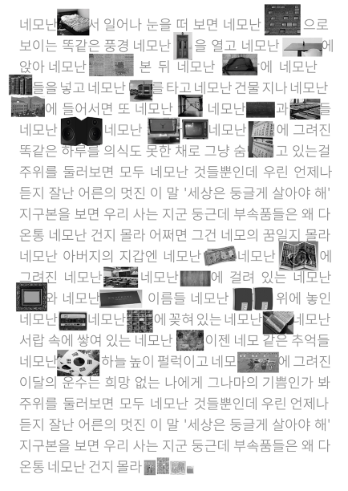
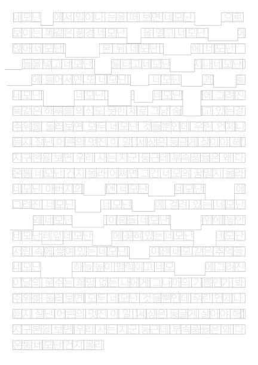
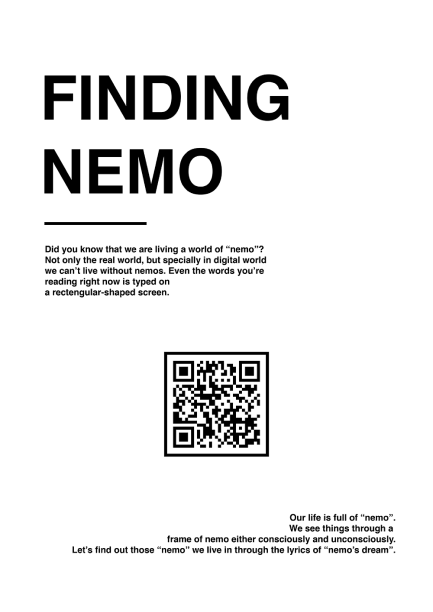
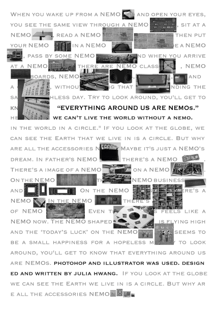
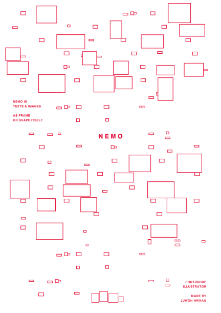
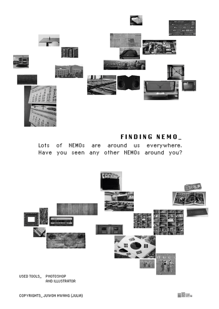
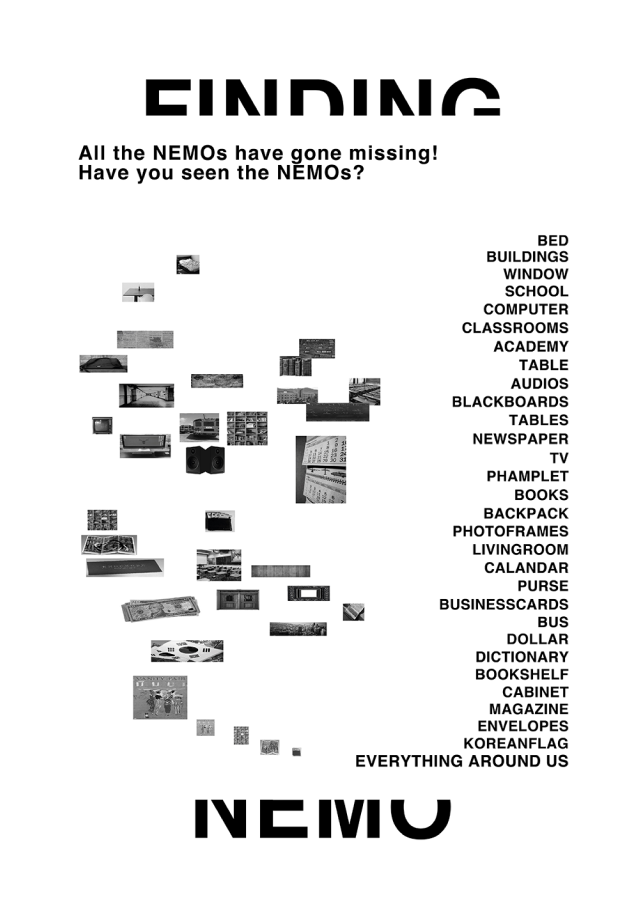
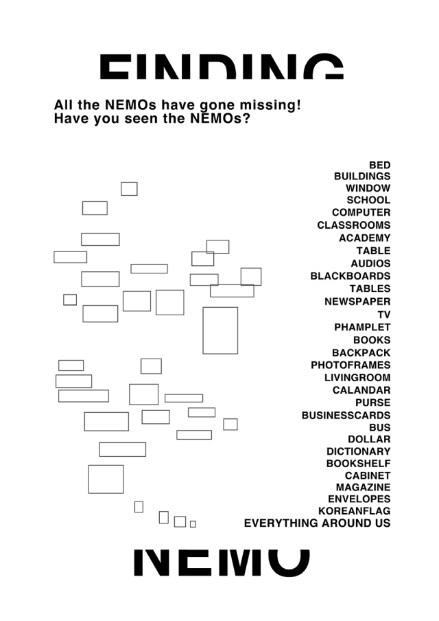

Project
Contact
@juliaxxalsk
Designer
Shape Research
황주원
FINDING NEMO
Category
Shape Poster1 / Shape Poster2 / Shape Poster3
‘네모의 꿈’ 이라는 노래의 가사를 빌려 우리의 일상 속 네모들을 찾아보자.
SHAPE POSTER1
SHAPE POSTER2
SHAPE POSTER3
Poster
Poster
Poster
첫번째 포스터 중 가운데 포스터를 골라 변주시켰다.
‘네모의 꿈’ 이란 가사 속 네모난 것들이 프레임만 남긴 채 사라졌다.
이미지 박스와 텍스트의 배치로 보이지 않는 사각형 프레임을 표현했다.







